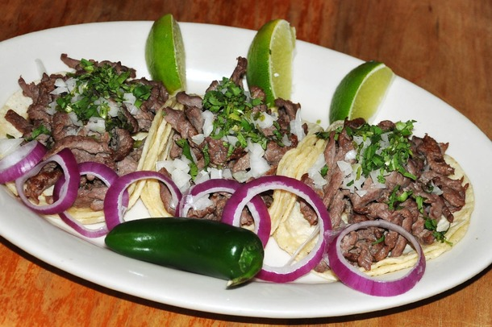
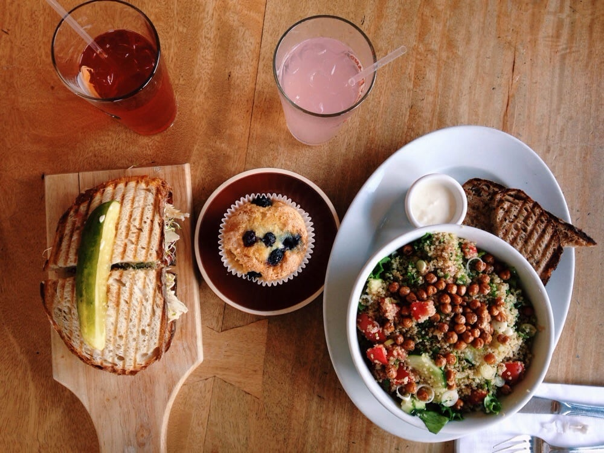

Located on the bustling cross streets of Orchard and Broome, Casa Mezcal has positioned itself as the go-to Mexican spot for neighborhood locals in the LES.
The dark atmospere, perfectly lit with candles and dim overhead lamps, lends itself to being the perfect spot for a date night or group birthday party with friends.

The guacamole is a *must* at this spot, along with the spicy margaritas to start. It's best to get these bad boys in a pitcher if you're in a group. For the entree, you
really can't go wrong -- from the mole enchiladas to the carne asada tacos, it's a hit no matter what your taste buds are in the mood for. Not only is this spot great for dinner,
but if you're the brunch going type, they serve a mean chilaquiles. Be sure to ask about their brunch special, too!
From Breakfast to Dinner, Berkli Parc knows what it's doing. Nestled on the corner of Delancey and Allen, this is a quaint, cozy, and trendy cafe that is
perfect spot to go to for jamming on work, a project, or meeting a friend for a lunch. It's whole vibe is based off of its California roots, welcoming its customers in
with a west coast vibe. It's best known for its supreme selction of coffees, as well as its freshly baked breads and delicious salads.

A favorite among the regulars is the quinoa salad -- packed with nutirents, you'd never know how healthy it is by the taste. Pair this with an iced cofee and one of their
signature pastries (I highly recommend their blueberry muffin!) and you've got youself the real deal. Kick back, relax, and enjoy your afternoon.